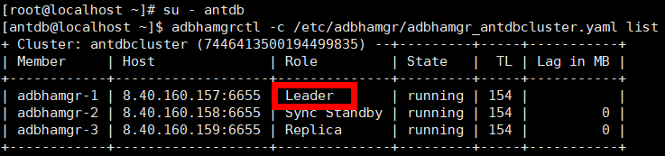

Before backing up the database, you must enable the archive mode. Otherwise, the backup will fail.
Precautions
Unless otherwise specified, the operations in this section use AntDB 7.0 as an example. The operations may vary according to the database version.
Procedure
For a centralized single-node system, modify the parameters in the configuration file to enable the archive mode:
- Use PuTTY to log in to the AntDB database host and switch to user root.
- Create a path for storing archive logs (WAL logs). The /mnt/server/archivedir/ path is used as an example in subsequent operations.
mkdir -p /mnt/server/archivedir/
- Grant the read and write permissions to the operating system (OS) user antdb who runs the database.
chmod 750 /mnt/server/archivedir/ chown antdb:antdb /mnt/server/archivedir/
- Run the su - antdb command to switch to user antdb. Information similar to the following is displayed:
[root@localhost ~]# su - antdb [antdb@localhost ~]$
- Log in to the database as user antdb.
adb -d antdb -U antdb -p 6655
- Run the show config_file; command to query the path to the postgresql.conf file. Information similar to the following is displayed:
postgres=# show config_file; config_file --------------------------------------- /home/antdb/app/data/postgresql.conf (1 row) - Press Ctrl+D to log out of user antdb and log in to the AntDB database host.
- Open the postgresql.conf file. The /home/antdb/app/data/postgresql.conf path is used as an example.
vi /home/antdb/app/data/postgresql.conf
- Find and modify the wal_level, archive_mode, and archive_command parameters in the postgresql.conf file as follows:
wal_level = replica # minimal, replica, or logical archive_mode = on # enables archiving; off, on, or always archive_command = 'cp %p /mnt/server/archivedir/%f' # command to use to archive a logfile segment

- Set wal_level to replica.
- Set archive_mode to on.
- Set archive_command to 'cp %p /mnt/server/archivedir/%f' and ensure that the archive log path is a single path.
- archive_command can be used only for the cp command.
- When modifying the postgresql.conf file, change the values of existing fields in the file. Do not add the same fields to the file. Otherwise, the restoration job will be affected.
- After the modification, press Esc, enter :wq! to save the configuration, and exit.
- Restart the database. -D indicates the user-defined data directory.
adb_ctl restart -D /home/antdb/app/data

During restart of the database, database services will be interrupted. Exercise caution when performing this operation.
For a centralized cluster, run database commands to enable the archive mode:
- Query the leader and non-leader nodes in the cluster.
- Use PuTTY to log in to any node in the cluster and run the su - antdb command to switch to the OS user who runs the database.
- Run the adbhamgrctl -c /etc/adbhamgr/adbhamgr_antdbcluster.yaml list command (replace /etc/adbhamgr/adbhamgr_antdbcluster.yaml with the actual path and file name) to query the leader node in the cluster. Specifically, the node whose Role is Leader is a leader node, and the node whose Role is another value is a non-leader node. The following figure shows an example.

- Stop the AntDB service on all non-leader nodes. Perform the following operations on each non-leader node.
- Use PuTTY to log in to a non-leader node in the cluster and run the su - antdb command to switch to the OS user who runs the database.
- Run the systemctl stop adbhamgr command to stop the AntDB service.
- Configure the leader node in the cluster and restart the AntDB service.
- Use PuTTY to log in to the AntDB database host of the leader node in the cluster.
- Run the su - root command to switch to user root and create a path for storing archive logs (WAL logs). The following operations use the /mnt/server/archivedir/ path as an example.
mkdir -p /mnt/server/archivedir/
- Grant the read and write permissions to the OS user antdb who runs the database.
chmod 750 /mnt/server/archivedir/ chown antdb:antdb/mnt/server/archivedir/
- Run the su - antdb command to switch to user antdb. Information similar to the following is displayed:
[root@localhost ~]# su - antdb [antdb@localhost ~]$
- Log in to the database as user antdb.
adb -d antdb -U antdb -p 6655
- Run the following commands in sequence to enable the database archive mode:
alter system set wal_level= 'replica';
alter system set archive_mode= 'on';
alter system set archive_command ='cp %p /mnt/server/archivedir/%f';
archive_command can be used only for the cp command.
- Press Ctrl+D to log out of user antdb and log in to the AntDB database host.
- Restart the AntDB service.
systemctl restart adbhamgr
Restarting the AntDB service on the leader node in the cluster will interrupt database services. Exercise caution when performing this operation.
- Start the AntDB service on all non-leader nodes. Perform the following operations on each non-leader node.
- Use PuTTY to log in to a non-leader node in the cluster and run the su - antdb command to switch to the OS user who runs the database.
- Run the systemctl start adbhamgr command to start the AntDB service.
- Configure all non-leader nodes in sequence and restart the AntDB service. Use PuTTY to log in to each non-leader node and perform operations from 3.b to 3.h.